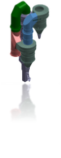
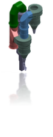

Tel & Fax : +98-21-44036728
Email : INFO@GREENID.IR
GREENID CO
Unit 5, No.5,Sharifi St.,Behnam St.,
Kashani Blvd, Tehran , Iran

©Copyright by GREENID


|
|
Gear drive (form-fit) |
Roller drive (friction-fit) |
|
Function |
Transmission of loads via tyres and rollers, transmission of torque via pinions and girth gear optimal separation of functions without reciprocal influence |
Transmission of loads and torque via tyres and rollers bearing and drive function in one unit means: functional compromise |
|
Design |
Components are optimized for the relevant function |
Additional drive forces requires stronger roller bearings |
|
Efficiency |
Maximum degree of efficiency, minimum wear and tear |
Slipping and friction result in wear and tear to tyres and rollers and impair efficiency |
|
Maintenance |
Ensure lubrication |
Ascertain friction values |
شرکت گرین آیدی بنا به در خواست ، با استفاده از بهترین مدلهای طراحی اجزاء شرکت های معتبر در زمینه کوره های دوار توانایی طراحی و ساخت انواع کوره دوار با ظرفیت های مختلف جهت صنایع سیمان ، صنایع معدنی را دارد
The kiln is the heart of the plant what an entire cement plant is dimensioned around, and where most of the final chemical reactions take place. So it’s not surprising that a producer requires an ideal kiln solution.
Rotary kilns the best in rotary kiln designs. With the ideal temperature profile and material retention time, these rotary kilns play a key role in ensuring optimal quality clinker. Their maximum operating reliability and minimum operating costs help our customers stay competitive as well.
Capacity …
60 up to 10000
Tones per day
The GREEN ID® Rotary kiln offers:
- Investment costs approx. 15 % lower than three station kilns.
- The lower space requirements and lower weights lead to more favorable construction costs.
- Mechanical overloading is impossible. This results in higher levels of operational reliability and lower maintenance costs.
- Lower consumption of refractory lining.
- The reduced required power and lower radiation losses reduce energy costs.
- The tire at the kiln discharge is outside the sintering zone.
Working Principle of Green ID rotary kiln
The rotary kiln can be divided into cement kiln, metallurgy chemical kiln and lime kiln according to the different materials processed. The cement kiln is mainly used to calcine cement clinker; In the process of non-ferrous and ferrous metallurgy, such as iron, aluminum, copper, zinc, sternum, nickel, wolfram, chromium, etc., the rotary kiln can be used to sinter and roast ore, concentrate, intermedium, etc.; The lime kiln is mainly used to calcine limestone.


 
Rotary Kiln Catalog

Rotary Kiln Catalog